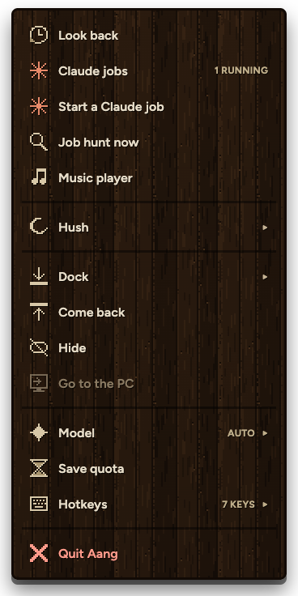
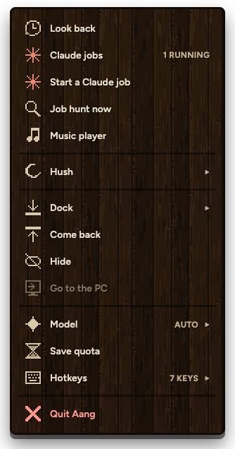
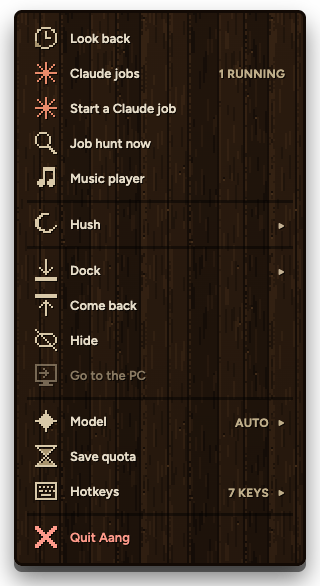
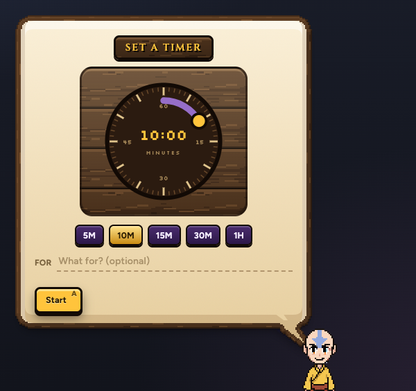
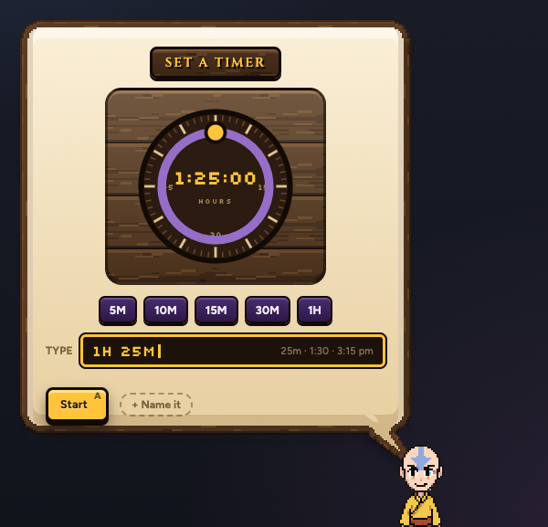

aTODAY

16 px words. 706 px tall, two thirds of your screen.
Two fixes you asked for: a menu that fits your screen, and a timer you can type any time into.
The real menu and the real timer, drawn by the app.
Same rows, same art. The icons stay sharp at every size.

16 px words. 706 px tall, two thirds of your screen.

606 px tall, about half your screen. Still easy to read.

556 px tall. The smallest before the words get hard to read.

Only the dial and presets, up to an hour. "What for?" takes a whole line.

Click the box and type: 25m, 1:30, 90s, 2h, or a clock time like 3:15 pm. The dial follows what you type. Enter starts it. A name only if you want one, from the small chip.